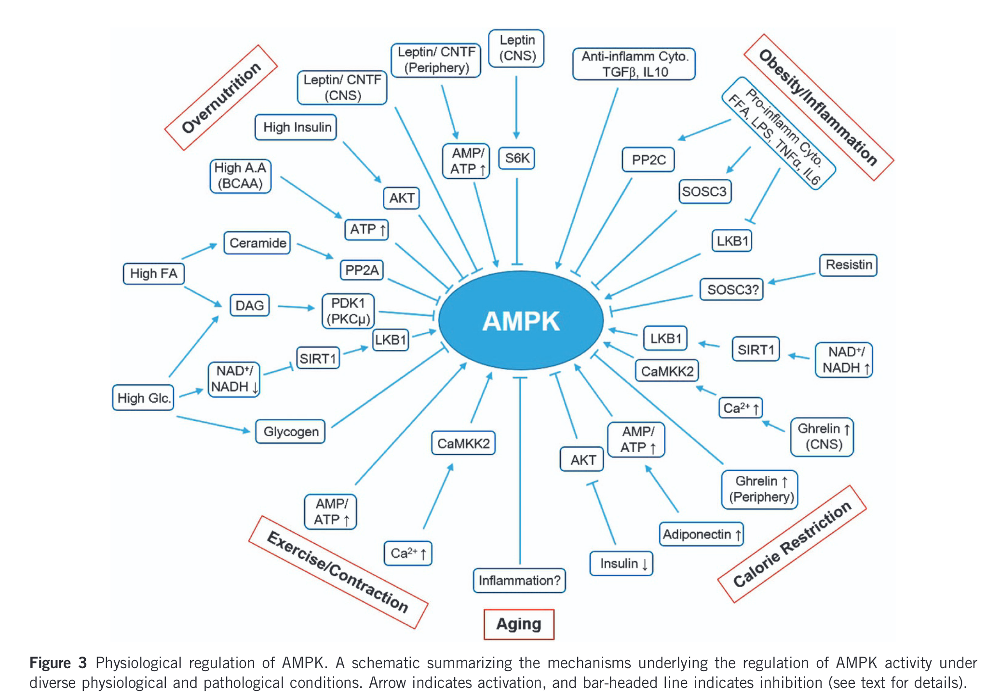

flowchart TD
A{Aerobic exercise<br/>Starvation<br/>Muscle contraction} --> B[SIRT1]
A --> C[Central Ghrelin]
A --> D[reduced Insulin]
B --> E{Upregulate AMPK}
C --> E
D --> E
E --> F[Increase Life span]
G[Animal Protein<br/>Muscle strengthening] --> H[mTOR activation]
H --> I[Increased muscle mass & strength]
E <--> J(INHIBIT)
J <--> H
Problem of life span and strength
medicine
A summary of the available evidence about diet and exercises
Take home message
High-volume, moderate-intensity, continuous, and frequent endurance training can negatively impact adaptations from resistance training.
Endurance exercises pair well with a low-calorie diet and promote a longer lifespan.
Resistance exercises go with a high-protein diet and enhance strength and balance.
Mixing aerobic and resistance exercises may be avoided within the same session—there should be a gap of 3 to 24 hours between them, depending on your focus.
Limit animal protein and strength training to 2 days a week; on other days, opt for lower protein intake and engage in aerobic exercises to maintain health and longevity.
With significant increases in global life expectancy over the past century, largely due to advancements in public health and socio-economic advancement, the focus has shifted toward maintaining a high quality of life and promoting a longer health span rather than merely extending life. Since death is inevitable, prevention efforts aim to compress morbidity—reducing the duration and severity of illness and disability—toward the very end of life. This approach seeks to minimize the time individuals spend suffering from disease before passing, thereby improving overall well-being during ageing(Harrison’s principles of internal medicine 2022).

One of the key development in this direction is primordial prevention, prevention of the development of risk factors for disease, not just prevention of disease.Naturally, emphasize is on upstream determinants of risk for chronic diseases, such as eating patterns, physical activity, and environmental and social determinants of health.
If we have to know more about basic questions like what to eat and what sort of physical activity promote long term health and longevity, we should start with the basic science.
Nutrition has a profound effect on ageing in all species. One of the most important nutritional interventions that influences ageing is caloric restriction (CR). Hence the focus is on nutrient sensing pathways. Key pathways are
AMPK pathway
mTOR pathway
SIRT1 pathway
IGF-1 pathway and
FGF-21 pathway
The mTORC1 (mechanistic Target of Rapamycin Complex 1) and AMPK (AMP-activated protein kinase) pathways are central regulators of cellular metabolism, growth, proliferation and longevity. Their interaction is critical, as their dysregulation contributes to conditions such as type 2 diabetes, insulin resistance, inflammation, and tumor progression.
Recent findings reveal that the interaction between these pathways is bidirectional. mTORC1 directly suppresses AMPK signalling,limiting AMPK’s ability to respond to metabolic stress. AMPK indirectly inhibits mTORC1. This reciprocal regulation highlights a complex feedback mechanism that maintains cellular homeostasis under varying conditions of energy availability and stress. This interplay underscores the importance of understanding mTORC1 and AMPK regulation both in health and disease(Ling et al. 2020).
AMP kinase is believed to be the central switch that positively regulate the life span of an individual(Jeon 2016).

It is regulated by a complex mechanism:

AMPK is up-regulated by
Aerobic exercise(Liang et al. 2021)
Starvation (via SIRT 1 (Chen et al. 2020), Ghrelin, Insulin(Jeon 2016))
Muscle contraction
mTORC1, mammalian target of rapamycin, is central in building muscle mass(Mota-Martorell, Jové, and Pamplona 2022). Muscle mass is important for maintaing strength and therefore healthy ageing.
mTORC1 is up-regulated by
Animal protein
Strengthening exercises
As previously mentioned, important role of mTORC1 is to inhibit AMP kinase and vice versa.
Now knowing the basics(as of now), the fundamental questions are
Exercise or not and how?
What to eat?
Exercise or not and what to eat?
Exercise is a round about way to enhance fitness level and compress the morbidity.
The Theory of Training Super-compensation
Systematic training is designed to enhance the fitness level of individuals. One foundational concept in training theory is the training super-compensation cycle, introduced by Yakovlev(Issurin 2010). This theory explains how the human body reacts and adapts to physical loads from training sessions or periods, leading to improved performance over time.
Phases of the Supercompensation Cycle
- Stress and Fatigue:
- Training imposes physical loads that the body is unaccustomed to, causing stress and fatigue.
- This results in an acute reduction in performance and work capability, marking the initial phase of the cycle.
- The body perceives this as an emergency and prioritizes recovery.
- Recovery:
- After the training session, the body begins an intense recovery process.
- This leads to the restoration of physical performance and work capability to pre-training levels.
- Supercompensation:
- Beyond recovery, the body continues to adapt in response to the prior training stimulus.
- Performance and work capability increase, allowing for improvements beyond the baseline.
This cyclical process underscores the importance of structured training.
Molecular Pathways in Training Adaptation
Training-induced adaptations occur through a network of molecular pathways, differing based on the type of activity:
Endurance Training1:
- Activates pathways such as:
- PGC-1α (Promotes mitochondrial biogenesis).
- CaMK (Calmodulin-dependent kinases).
- Calcineurin.
AMPK.- MAPKs (Mitogen-activated protein kinases, e.g., ERK1/2, p38 MAPK).
- Leads to metabolic adaptations like mitochondrial biogenesis and angiogenesis, enhancing endurance capacity.
Resistance Training2:
- Primarily stimulates the
AKT-mTOR pathway, which promotes:- Muscle hypertrophy.
- Strength and power gains.
- Myofibrillar protein synthesis.
flowchart LR A[AMPK] <--> B(INHIBITS) C[mTORC1] <--> B
This cell level interplay has got important practical implications.
In the early 1980s, Hickson’s groundbreaking research revealed that when individuals engaged in concurrent training (CT)—a combination of strength and endurance training—the adaptations from resistance training were diminished compared to those achieved through resistance training alone. Hickson initially termed this phenomenon the “Interference Effect”(Hickson 1980). Today, it is widely recognized as the “Concurrent Training Effect” (CTE).
A training regimen with high energy demands can significantly activate mechanisms that inhibit pathways regulating muscle myofibrillar protein synthesis(Wilson et al. 2012). Specifically, endurance exercises characterized by high volume or distance, lasting over 20 minutes, performed at moderate intensity (below 85% of maximum heart rate), and executed continuously are likely to amplify the concurrent training effect (CTE) when included in a concurrent training program(Terzis et al. 2016).
Low-volume high-intensity interval training (HIIT) or sprint interval training (SIT)(Coates et al. 2023), consisting of short sessions (4–10 minutes), appears to exert a minimal negative impact on resistance training adaptations within a concurrent training program(MacInnis and Gibala 2016). These training modalities, particularly when cycling is involved, have a lower overall energy demand compared to continuous endurance exercises of matched volume, making them less likely to interfere with the benefits of resistance training(Gibala et al. 2012).
Recent studies strongly suggest that separating endurance and strength training sessions yields superior adaptations in endurance capacity, muscle hypertrophy, strength, and power compared to combining both into a single session. This idea, initially highlighted by Sale et al., demonstrates that scheduling these training types on different days or in distinct sessions enhances the benefits of each(SALE et al. 1990).
Optimal results are achieved when resistance and endurance training sessions are spaced 3–6 hours apart (to prioritize resistance adaptations) or 24 hours apart (to enhance endurance outcomes). This separation likely minimizes potential overlap in the activation of myofibrillar and mitochondrial protein synthesis pathways, thereby maximizing the benefits of both training modalities(Methenitis 2018).
Conclusion
High-volume, moderate-intensity, continuous, and frequent endurance training is believed to negatively impact resistance training-induced adaptations.
This effect likely occurs due to the inhibition of the AKT-mTOR signaling pathway, mediated by the activation of adenosine monophosphate-activated protein kinase (AMPK).
Endurance/Aerobic exercises go with low calorie diet. Both have positive effect on life span.
Resistance exercises go with high protein intake. Both help in improving strength and balance.
One may not mix aerobic with resistance exercises. There should be at least 3-24 hrs. gap between them, depending on where your focus is on.
Lot of animal protein and strengthening exercises will increase muscle mass. But the same has got negative affect on life span.
Hence, limit animal protein and strengthening exercises to 2 days per week. Rest of the days, take less protein and do aerobic exercises3.
References
Chen, Cui, Min Zhou, Yuchen Ge, and Xiaobo Wang. 2020. “SIRT1 and aging related signaling pathways.” Mechanisms of Ageing and Development 187 (April): 111215. https://doi.org/10.1016/j.mad.2020.111215.
Coates, Alexandra M., Michael J. Joyner, Jonathan P. Little, Andrew M. Jones, and Martin J. Gibala. 2023. “A Perspective on High-Intensity Interval Training for Performance and Health.” Sports Medicine 53 (S1): 85–96. https://doi.org/10.1007/s40279-023-01938-6.
Gibala, Martin J., Jonathan P. Little, Maureen J. MacDonald, and John A. Hawley. 2012. “Physiological Adaptations to Low-Volume, High-Intensity Interval Training in Health and Disease.” The Journal of Physiology 590 (5): 1077–84. https://doi.org/10.1113/jphysiol.2011.224725.
Harrison’s principles of internal medicine. 2022. 21st ed. New York: McGraw Hill.
Hickson, Robert C. 1980. “Interference of Strength Development by Simultaneously Training for Strength and Endurance.” European Journal of Applied Physiology and Occupational Physiology 45 (2-3): 255–63. https://doi.org/10.1007/bf00421333.
Issurin, Vladimir B. 2010. “New Horizons for the Methodology and Physiology of Training Periodization.” Sports Medicine 40 (3): 189–206. https://doi.org/10.2165/11319770-000000000-00000.
Jeon, Sang-Min. 2016. “Regulation and function of AMPK in physiology and diseases.” Experimental & Molecular Medicine 48 (7): e245. https://doi.org/10.1038/emm.2016.81.
Liang, Jiling, Hu Zhang, Zhengzhong Zeng, Liangwen Wu, Ying Zhang, Yanju Guo, Jun Lv, Cenyi Wang, Jingjing Fan, and Ning Chen. 2021. “Lifelong Aerobic Exercise Alleviates Sarcopenia by Activating Autophagy and Inhibiting Protein Degradation via the AMPK/PGC-1α Signaling Pathway.” Metabolites 11 (5): 323. https://doi.org/10.3390/metabo11050323.
Ling, Naomi X. Y., Adrian Kaczmarek, Ashfaqul Hoque, Elizabeth Davie, Kevin R. W. Ngoei, Kaitlin R. Morrison, William J. Smiles, et al. 2020. “mTORC1 Directly Inhibits AMPK to Promote Cell Proliferation Under Nutrient Stress.” Nature Metabolism 2 (1): 41–49. https://doi.org/10.1038/s42255-019-0157-1.
MacInnis, Martin J., and Martin J. Gibala. 2016. “Physiological Adaptations to Interval Training and the Role of Exercise Intensity.” The Journal of Physiology 595 (9): 2915–30. https://doi.org/10.1113/jp273196.
Methenitis, Spyridon. 2018. “A Brief Review on Concurrent Training: From Laboratory to the Field.” Sports 6 (4): 127. https://doi.org/10.3390/sports6040127.
Mota-Martorell, Natalia, Mariona Jové, and Reinald Pamplona. 2022. “mTOR Complex 1 Content and Regulation Is Adapted to Animal Longevity.” International Journal of Molecular Sciences 23 (15): 8747. https://doi.org/10.3390/ijms23158747.
SALE, D. G., I. JACOBS, J. D. MACDOUGALL, and S. GARNER. 1990. “Comparison of Two Regimens of Concurrent Strength and Endurance Training.” Medicine & Science in Sports & Exercise 22 (3): 348???356. https://doi.org/10.1249/00005768-199006000-00012.
Terzis, Gerasimos, Kostas Spengos, Spyros Methenitis, Per Aagaard, Nikos Karandreas, and Gregory Bogdanis. 2016. “Early Phase Interference Between Low-Intensity Running and Power Training in Moderately Trained Females.” European Journal of Applied Physiology 116 (5): 1063–73. https://doi.org/10.1007/s00421-016-3369-z.
Wilson, Jacob M., Pedro J. Marin, Matthew R. Rhea, Stephanie M. C. Wilson, Jeremy P. Loenneke, and Jody C. Anderson. 2012. “Concurrent Training.” Journal of Strength and Conditioning Research 26 (8): 2293–2307. https://doi.org/10.1519/jsc.0b013e31823a3e2d.
Footnotes
150 minutes of moderate intensity or 75 minutes of high intensity aerobic exercise.↩︎
Regular repeated weight lifting for a fixed period of time, say, 30 minutes.↩︎
Author’s opinion↩︎
It is fair to assume that our genes have not yet evolved enough to process an abundance of food and a total lack of physical exertion. Nor are they familiar enough with lack of variety in food and excessive round the clock stress. Cavemen were accustomed to bouts of physical exertion (for food, mates, and escaping enemies) and sporadic feasts with prolonged periods of an empty stomach.
Emulating eating and exercise patterns in line with our ancestors in the form of HIIT/SIT could be promising.↩︎
Citation
BibTeX citation:
@online{puthezhath2024,
author = {Puthezhath, Kishore},
title = {Problem of Life Span and Strength},
date = {2024-12-07},
url = {https://www.knotes.co.in/posts/Fragility.html},
langid = {en}
}
For attribution, please cite this work as:
Puthezhath, Kishore. 2024. “Problem of Life Span and
Strength.” December 7, 2024. https://www.knotes.co.in/posts/Fragility.html.